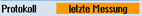

Die Funktion "Protokolliere letzte Messung“ wird durch einmaligen Aufruf des Protokollierzyklus CYCLE150 programmiert. Es wird dabei nicht gemessen, sondern auf die in den Ergebnisparametern der Messzyklen (GUD-Variable) noch vorhandenen Werte der letzten Messung zurückgegriffen und nur ein Unterzyklus zum Protokollieren aufgerufen. Diese Funktion ist nur sinnvoll, wenn während der Messung Protokoll "aus" angewählt war.
Die Ausgabe eines Standardprotokolls ist nur möglich, wenn vorher ein Messzyklus im Automatikbetrieb aktiv war.
Ein Teileprogramm für Protokollierung "Letzte Messung“ ist angelegt und befindet sich im Editor.
|  | 1. | Im Eingabefeld Protokoll "letzte Messung“ wählen |
2. | Weiter Parameter versorgen, wie oben beschrieben | |
3. | Drücken Sie den Softkey "Übernehmen". Im Editor erscheint der generierte Zyklenaufruf. |
CYCLE150(30,11012,"//NC/MPF.DIR/LAST_MEASURE.TXT")
M30